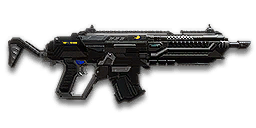

← Back to the NC9 A-Tross comparison
Sage Guide · New Conglomerate · Combat Medic
The NC's hardest-hitting assault rifle — for a Combat Medic, an Engineer, or a Heavy Assault with ASP. It costs 1,000 certs, hits like a truck, and rewards the player who aims first and bursts second.
The one-line verdict: five bullets to kill up close, three to the head — at any range. The price: the slowest fire rate of any rifle you'll meet, and a 30-round magazine that punishes spray. Fight between 10 and 50 metres and it will carry you.

The NC9 A-Tross · New Conglomerate · 30-round magazine · 1,000 certs
You see an enemy, you sprint toward him, and you start firing while still running. The bullets go everywhere — and you keep missing, even after you aim down sights. Here is the one habit to fix first.
Sprinting opens your bullet spread to a 7.0° cone — the widest it can get. Holding the trigger from the hip then grows it further, +0.14° per shot.
Pressing the aim button does not reset the spread you already built. It just swaps the cone for your aimed one — and the bloom you stacked stays.
So your first aimed bullets still fly like hipfire ones. You die looking straight at him, through a perfectly steady sight.
Stop → Aim → Fire. Three beats, in order. You lose half a second. You gain a kill.
Let go of the sprint key and let the spread settle (~0.3 s). Then press your aim button and let the sight come up (~0.15 s). Then fire — from a cone of 0°. Dead-on, before the first bullet leaves.
That's it. That's the lesson. You'll practise exactly this rhythm in the simulator in section 04.
You sprint to the fight — your bullet cone is already at its widest, 7.0°.
You fire from the hip while running — the cone grows +0.14° per shot.
You press ADS mid-hold — the sight comes up, but the bloom stays. The bullets spray.
The order is what hurts you: sprint → fire → aim. ADS does not reset bloom, so the spray you built while running follows you into the sight.
Let go of the sprint key and let the cone settle — about 0.3 s.
Press your aim button and let the sight come up — about 0.15 s. Wait it out: a heartbeat of patience beats a magazine of misses.
Now fire — from the 0° cone. The first bullets are dead-on; short bursts keep them there.
Close enough to touch him? Hipfire works. No ADS needed, stopping optional. Keep strafing and let the ~0.5 m moving hipfire ring do the work — scoping in here costs time and halves your speed, and that gets you killed faster than any bloom ever will.
The stop → aim → fire routine is for mid-range, where the spray actually misses.
Every enemy infantry has 1,000 health — 500 shield on top of 500 health. Your bullet does 200 damage up close, fading to 167 at long range. Headshots count double; leg shots count less (×0.9). That gives you three numbers worth memorising:
| Range | Damage / bullet | Head | Chest | Legs | vs shielded Heavy |
|---|---|---|---|---|---|
| Close — 0–10 m | 200 | 3 | 5 | 6 | 8 |
| Mid — 10–47 m | 200 → 184 | 3 | 6 | 7 | 8 |
| Far — 47–85 m+ | 184 → 167 | 3 | 6 | 7 | 9 |
Shots-to-kill use the lowest damage in the band — the worst case at that range. A shielded Heavy has 1,450 health (1,000 + 450 shield). 3 headshots ≈ 0.25 s (252 ms), 5 chest shots ≈ 0.50 s (504 ms) up close. The exact edges: 5 chest shots hold to 10 m, and 6 shots kill at every range — even the 167 minimum damage adds up to 1,002. Maximum damage per second: 1,587. Magazine: 30 rounds, 150 in reserve.
Read it left to right: full damage to 10 m, then a slow slide down to 167 at 85 m — and it never drops below 167.
Gold dashed line: High Velocity Ammunition — 200 damage until 8 m, still falling at 100 m and reaching 167 only at 105 m. It trades a little close-range reach for a little long-range reach. (Section 06.)
Same gun, four different fights. The distance decides everything — whether you hipfire or scope in, whether you burst or tap, and where you put your crosshair.
Aim: centre of the chest. Trigger: hold it, or fire in short bursts.
At this range your moving hipfire spread is about half a metre wide — a body-sized circle. Don't ADS: it halves your speed and the sight costs time you don't have. Strafe side to side; the enemy is close enough that a miss is his problem, not yours.
Aim: upper chest and neck. Trigger: bursts of 5 — your recoil climbs into the head for free damage.
Five to six chest shots kill here, three to the head. This is where the A-Tross earns its certs: it needs fewer bullets than any fast-firing rifle at this range.
Aim: the head, or the neck line. Trigger: bursts of 5, then release and let the spread shrink.
Your aimed cone starts at 0° and grows 0.07° per shot. After five shots, release the trigger and wait for the cone to settle before the next burst — pull gently down-left against the recoil drift (the gun climbs up and slightly right). A 2x sight (30 certs) helps a lot here.
Aim: the head. Trigger: single shots or two-round bursts.
You still do 167 damage per bullet out here — your edge over fast rifles, whose damage has fallen further. But your bullets are slow (600 m/s), so lead moving targets by a body width or two. If you can't land two hits in a row, stop plinking and close the distance.
Sweet spot Five to six chest shots kill here, three to the head. This is where the A-Tross earns its certs — aim at the neck and let the recoil climb into the head.
Your bullet spread is a cone. How wide it is depends on how you're moving and whether you're aiming. Memorise the two numbers that matter: 3.0° hipfire while moving, 0° aimed while standing still. Everything else is a shade between them.
| What you're doing | Cone (hipfire) | Cone (aiming) |
|---|---|---|
| Sprinting | 7.0° | — |
| Moving (hipfire) | 3.0° | — |
| Standing still (hipfire) | 2.5° | — |
| Crouched (hipfire) | 2.0° | — |
| Crouch-walking | 2.5° | 0.17° |
| Feet planted, aiming | — | 0° |
| Strafing while aiming | — | 0.32° |
Cone = the full angle of the bullet spread. Aiming while moving costs you: 0.32° instead of 0°, and your movement speed is halved (0.5×). That's why the rhythm is strafe between bursts, stand still during them. Crouching helps a little (2.0° hip, 0° aimed) but makes you a still target — use it behind cover, not in the open.
The A-Tross has a fire-mode switch — press B to cycle Full-Auto / 2-round burst / Semi-Auto. Leave it on Full-Auto most of the time and do your bursting with your trigger finger; the built-in 2-round burst is a useful crutch at long range, and Semi-Auto is for slow, careful tap-fire past 50 m.
| How you pull the trigger | What happens | Best at |
|---|---|---|
| Mag dump — hold the trigger | 30 rounds in 3.7 s. The cone grows 0.07° per aimed shot (0.14° from the hip), so by shot 15 it's wider than your target's chest. | 0–10 m, panic moments |
| Bursts — 5 shots, release, repeat | The cone stays tight enough to hit, and releases let it shrink again. 5 shots is ideal; 6–8 still works when you're learning. | 10–50 m — your home |
| Tap-fire — 1–3 shots, slow | Each shot starts near the 0° cone. Slowest to kill, but the most accurate thing this gun does. | 50 m+ |
A note on standing still: while you're planted, your first 4 aimed shots stay below the 0.32° strafing floor (3 from the hip) — but the cone grows 0.07° with every aimed shot from the very first one. There is no pause in that growth; the "free" window is just the stretch where the cone is still smaller than it would be while moving.
Hold the button to fire. Watch the spread grow — this is the NC9 A-Tross's (476 RPM, 0° starting cone, 0.07° bloom per shot, target at 30 m). Release to let the cone shrink again. A burst is graded at the end.
Hold the button and watch what happens to your cone.
Numbers are abstract. These three pictures are the same numbers, drawn so you can see them. The hands-on version — holding the trigger yourself — is the practice window in section 04.
Each ring is the circle your bullets land inside at 8 m — the ring's width is the spread, and the target is a body about 0.5 m across the chest. Under 10 m the moving ring (0.42 m) still fits inside the body. That's why hipfire works up close.
Moving hipfireStanding hipfireWith Laser Sight
The cone grows 0.07° per aimed shot. After five shots it's 0.35° wide — at 30 m that's a 0.18 m circle, still inside the chest. Keep holding and it keeps growing; release and it shrinks back to 0°.
Same size as the world. You keep your peripheral vision; the red dot floats on the target.
Best for: 0–25 m, room clearing, tracking a moving target.
Twice as big, half the world around the edges. The head is a real target now, not a guess.
Best for: 25–50 m, holding a lane, picking heads.
That's the whole 30-cert decision from section 06 in one picture: 1x for awareness, 2x for precision. Buy both — they're 30 certs each — and swap them for the fight you're in.
Nothing on this gun is free — the NC9 A-Tross itself costs 1,000 certs (or 699 Daybreak Cash), and every attachment costs certs too. Your most important buys are cheap, though: both reflex sights are 30 certs each. Buy in the order shown and stop whenever the gun feels right.
What you start with: a plain post-and-notch sight, no dot.
A red dot, same size as the world. Fast to pick up, nothing lost at the edges.
Twice the magnification. The head becomes a real target at 25–50 m.
Night-vision overlay that highlights enemies in bright green, even in smoke.
Heavy magnification for long range.
Sniper-level magnification on an assault rifle.
The gun as it comes. No downside, no upside — and that's fine.
Vertical recoil −30%. Your bullets climb less, so bursts stay on target longer. Costs: hipfire spread +15%, and you show on the minimap 35 m further.
ADS bloom −20% (0.07° → 0.056° per shot), but ADS move speed −20% — you walk even slower while aiming.
Hipfire bloom −40% (0.14° → 0.084° per shot), but vertical recoil while aiming +20%.
You don't show on the minimap when you fire, and your shots are quieter. Costs: damage starts falling off 20 m sooner, and bullet velocity drops 15% (600 → 510 m/s).
Hides your muzzle flash. You still show on the minimap 15 m further than usual.
Horizontal recoil −25% (0.2° → 0.15°). The side-to-side walk shrinks, so bursts stay in a vertical line you can pull against. Costs: equip time +0.15 s (0.78 → 0.93 s).
Hipfire accuracy +33% — your standing hipfire cone shrinks from 2.5° to 1.68° (0.35 m → 0.23 m at 8 m). No downside except a visible laser dot.
+5 rounds: 30 → 35 per magazine. Costs: equip and unequip +15%.
First-shot vertical recoil −60% — the opening kick almost vanishes. Costs: horizontal recoil +10%.
A single-shot underbarrel grenade launcher (press Gear Slot 1 to toggle). Lobs an explosive round at a doorway or a MAX. Costs: equip time +0.25 s.
An underbarrel smoke grenade launcher (Gear Slot 1 to toggle). Drops a smoke screen where you aim.
Press X to shine a light that reveals cloaked infiltrators. No effect on your shooting at all.
Bullet velocity +10% (600 → 660 m/s) and damage stays high 20 m further (full damage to 8 m, 167 damage only at 105 m instead of 85 m). Costs: full damage now ends at 8 m instead of 10 m.
20% of each bullet's damage becomes a disrupting pulse that drains the target's shield and ability energy — 16% of their max shield per shot on this gun. No extra damage for you.
One thing this gun doesn't have: Soft Point Ammunition. Don't go looking for it — the A-Tross gets High Velocity instead, and that's the right trade for a 200-damage rifle.
Attachment costs only — the gun itself is another 1,000 certs on top of every setup below. Pick the one that matches the fight you're walking into, not the one that looks best on paper.
0 certs · Day one
The gun as it comes. It still kills in five bullets up close — spend your first certs on the 1x sight, not on anything else.
230 certs
Your everyday setup. The 2x sight and the grip make 25–50 m comfortable, HVA keeps your bullets fast and your damage high, and you keep the 1x in your pocket for the rooms.
230 certs · Indoor brawler
For bio-labs and point rooms. Hipfire is tight, the laser makes it tighter, and you never slow down to scope in. Swap in Extended Magazine (+100) if you hold the point alone.
330 certs
For holding a lane at 40–50 m. The Compensator and Heavy Barrel together make long bursts almost flat — but you give up your close-range game to get it.
Three headshots kill at any range — even at 85 m, where your bullet still does 167 damage. Put the crosshair on the neck and let the recoil climb into the head; the gun does the work for you.
Five shots, release the trigger, five shots again. The cone grows 0.07° per aimed shot, and a release lets it shrink back to 0°. A 6–8 shot burst still works while you're learning — a 15-shot mag dump doesn't.
Reloading with rounds left takes 2.1 s; an empty reload takes 3.15 s — a whole extra second of standing still with a dead gun. After every fight, duck behind cover and reload, even if you only fired ten rounds.
Point your crosshair where the enemy will appear before he does. While aiming you move at half speed, so don't strafe while firing — plant your feet for the burst, then move between bursts.
You still do 167 damage per bullet at 85 m, where fast rifles have faded to far less. Don't chase enemies into a knife fight, and don't snipe from a hill. Hold the middle distance and let the damage do the talking.
Medic: revive between fights — a revive is worth more than a kill. Engineer: keep the ammo pack down and the MAX repaired. Heavy Assault (ASP): shield before you peek. The rifle covers the gaps; it isn't the job.
476 rounds per minute is the slowest fire rate of any rifle you'll meet. If you and a fast rifle both hold the trigger and both hit everything, he kills you first — a miss costs you 126 ms, and you can't afford many.
Fix: don't trade mag dumps. Land your first burst, make him miss, and punish his reload.
At 476 RPM a full magazine lasts 3.7 seconds of firing, and five chest shots per kill means six kills in theory — three in practice, once you miss. A second enemy arriving mid-mag is a real problem.
Fix: reload after every fight, and count your bursts — six bursts of five is an empty mag.
That's a whole extra second over the 2.1 s reload with rounds left — an eternity with a dead gun in a doorway.
Fix: never let the mag hit zero. Reload behind cover, not in the open.
The kick is mostly straight up (6.7–7.3°), with a small rightward drift — and the first shot kicks 1.33× harder than the rest. Hold the trigger and your bullets walk up and right off the target.
Fix: pull down-left as you fire. You'll see this clearly in the Wall Test drill below.
Equipping takes 0.78 s (0.93 s with a Forward Grip), and aiming halves your move speed. Your hipfire cone is 2.5° standing — workable under 10 m, useless past it. There is no mode where this gun is quick.
Fix: decide before the fight, not during it. Have the rifle out, be in position, and don't hipfire-duel past ~10 m.
Go to the VR training room (warp gate terminal → VR Training). No certs spent, no one shooting back. Run these five drills and you'll feel the gun instead of guessing at it.
Stand 20 m from a flat wall. Empty a full 30-round magazine into it without pulling the mouse. Look at the hole pattern: it climbs up and slightly right. Now do it again, pulling down-left — the pattern should stay in one tight group.
Walk sideways past the training dummies at 15 m, aiming down sights. Keep the crosshair on the neck line of each dummy as you pass. When you reach one, fire a 5-shot burst. The recoil should climb into the head.
Pick a dummy at 30–40 m. Fire bursts of 5, release fully, and let the cone shrink before the next burst. Count your hits: you should land at least 4 of 5 per burst. If you can't, slow down — the release matters more than the speed.
Stand 5 m from a dummy. Circle around it with A/D, hipfiring the whole time — never press ADS. Your moving hipfire ring is about 0.5 m wide here, so most bullets should hit. This is your under-10 m fight.
Fire exactly 20 rounds at a dummy, step behind a pillar, reload, repeat. Train the muscle memory: fight, cover, reload — never reload in the open, never let the mag hit zero.